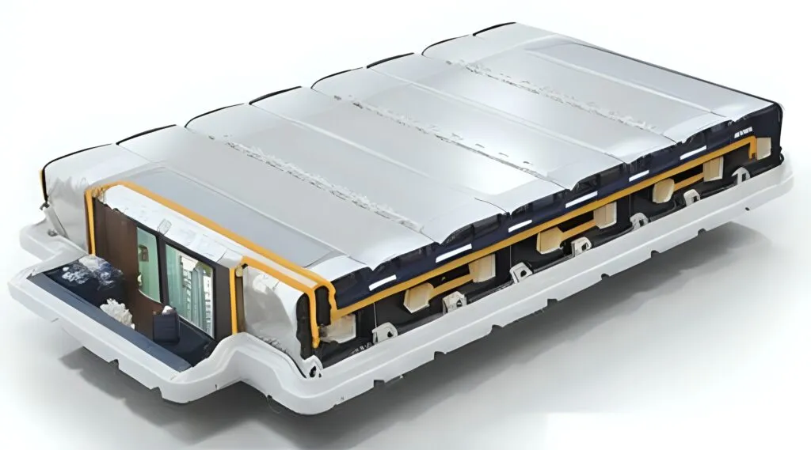
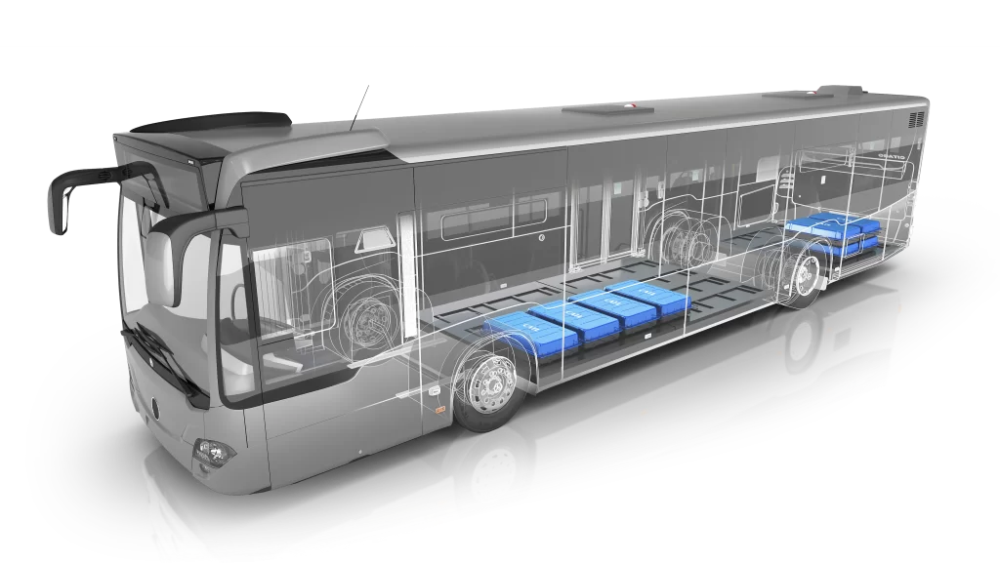
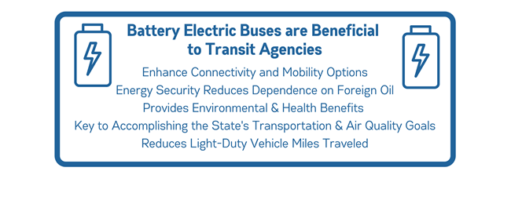
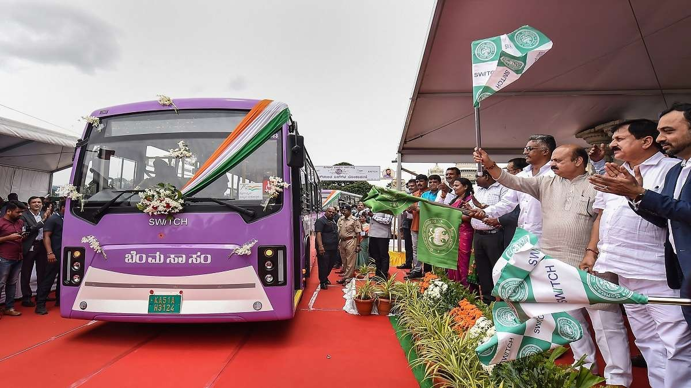
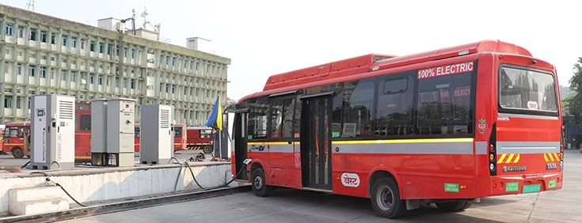
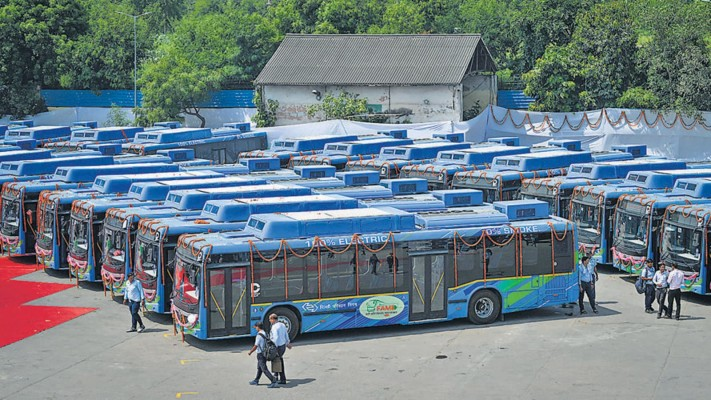
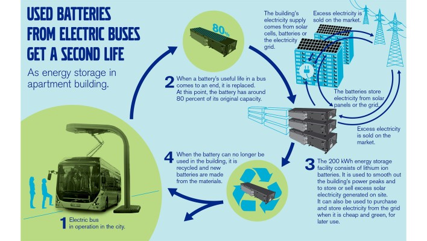
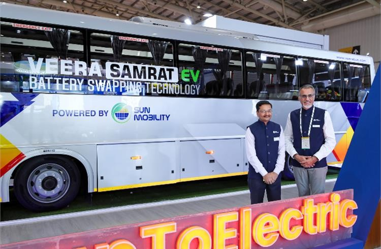

The shift towards electric buses (EBs) marks a significant transformation in public transportation, driven primarily by advancements in battery technology. As cities worldwide grapple with pollution and greenhouse gas emissions, electric buses present a sustainable alternative to traditional diesel-powered vehicles. This newsletter explores how battery packs are revolutionizing public transport, focusing on their benefits, innovations, and implications for urban mobility.
The Importance of Battery Technology in Electric Buses
High Energy Density and Longer Ranges
Lithium-ion batteries are at the forefront of electric bus technology due to their high energy density, which allows for longer driving ranges on a single charge. For instance, electric buses equipped with lithium-ion battery packs can achieve ranges exceeding 500 kilometers, depending on the configuration and conditions.
This capability significantly reduces range anxiety for operators and enhances the feasibility of electric buses on longer routes.
Cost Efficiency and Performance
Electric buses not only reduce operational costs—approximately 50% lower than diesel counterparts—but also have lower maintenance expenses due to fewer moving parts.
The integration of advanced battery management systems ensures optimal performance and longevity, monitoring parameters such as temperature and state of charge to prevent issues like thermal runaway.

Innovations in Battery Packs
Diverse Battery Configurations
Electric buses utilize various battery pack configurations tailored to specific operational needs. For example, some models feature battery packs ranging from 250 kWh to 660 kWh, allowing for flexibility in charging frequency and operational range.
Companies like Scania offer high-capacity options (up to 520 kWh) that cater to both medium and heavy-duty operations globally.
Emerging Technologies
Innovations such as solid-state batteries promise enhanced safety by reducing risks associated with liquid electrolytes. Additionally, wireless inductive charging systems are making strides, allowing buses to recharge without physical connectors during regular service routes.
These advancements not only improve convenience but also support the growing electrification of public transport.

Environmental Impact
Reduction of Emissions
Electric buses contribute significantly to lowering urban air pollution levels. Eliminating tailpipe emissions helps improve air quality and reduce greenhouse gases. The transition to electric fleets aligns with global sustainability goals, promoting cleaner urban environments.
Government Support and Infrastructure Development
Governments are increasingly backing the transition to electric buses through incentives and policies. In India, for instance, initiatives like the FAME II scheme aim to accelerate the adoption of electric buses across major cities.
Adequate charging infrastructure is essential for this transition, with various solutions including plug-in charging stations and overhead conductive systems being deployed.

Case Studies: Success Stories from Around the Globe
Shenzhen, China
Shenzhen became the first city in the world to electrify its entire public bus fleet—over 16,000 buses. This transition reduced carbon emissions by 1.35 million tons annually and cut operating costs significantly, showcasing the economic viability of electric buses.
Amsterdam, Netherlands
Amsterdam is at the forefront of green public transport, using battery-powered buses integrated with solar charging stations. This holistic approach creates a self-sustaining ecosystem and highlights how renewable energy can complement battery technology.
India: Bengaluru’s EV Push
Bengaluru has introduced a fleet of electric buses under the FAME II scheme. Operated by the Bangalore Metropolitan Transport Corporation (BMTC), these buses have already saved thousands of liters of diesel and reduced emissions substantially.

Mumbai’s Electric Revolution
Mumbai plans to have a 100% electric bus fleet by 2028. BEST (Brihanmumbai Electric Supply and Transport) is leading this effort, introducing battery-swapping technology to minimize downtime and improve operational efficiency.

Delhi NCR: Reducing Urban Pollution
Delhi, a city battling severe air pollution, has embraced electric buses as part of its clean-air initiative. With over 1,500 buses planned, these efforts are transforming urban mobility while cutting harmful emissions.

Challenges in Battery Technology
Battery Longevity and Maintenance: Battery degradation over time affects performance and range. Indian manufacturers are experimenting with second-life battery usage to lower costs.
Charging Infrastructure: India has made strides, but the lack of widespread charging stations remains a bottleneck. Innovations like rooftop solar-powered chargers are addressing this gap.
Cost Implications: The upfront cost of battery packs is high. However, operational savings over time make electric buses a worthwhile investment for governments.

Innovations in Battery Technology for Electric Buses
Fast-Charging Solutions
- Ultra-Fast DC Chargers: Decreasing charging times dramatically, making electric buses more convenient for mass transit.
- Solar Integration: Solar-powered charging depots in India reduce dependency on grid power.
Battery Swapping Technology
Battery swapping is gaining traction in cities like Mumbai. It allows buses to exchange depleted batteries for fully charged ones, reducing downtime and improving route efficiency.

Future Outlook
As battery technology continues to evolve, the role of electric buses in public transport is expected to expand. Innovations in smart charging solutions and battery advancements will further enhance their reliability and efficiency.
The integration of vehicle-to-grid (V2G) capabilities allows electric buses not only to draw power but also to return energy to the grid during off-peak hours, contributing positively to overall energy management.
In conclusion, battery packs are pivotal in revolutionizing public transport through electric buses. With their ability to provide sustainable, cost-effective, and efficient transit solutions, they represent a critical step towards greener urban mobility. As cities continue to invest in electric bus infrastructure and technologies, the future of public transportation looks promisingly sustainable.